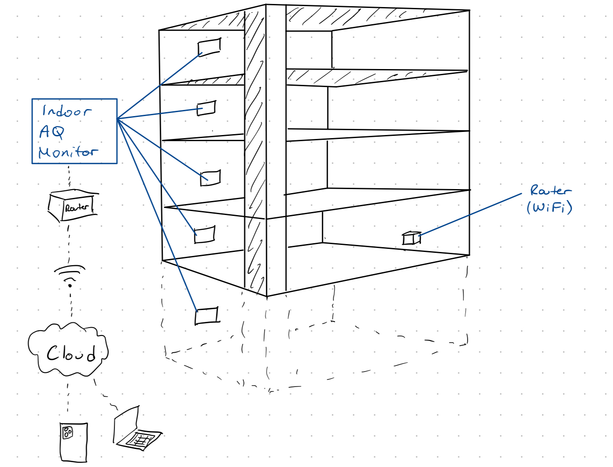
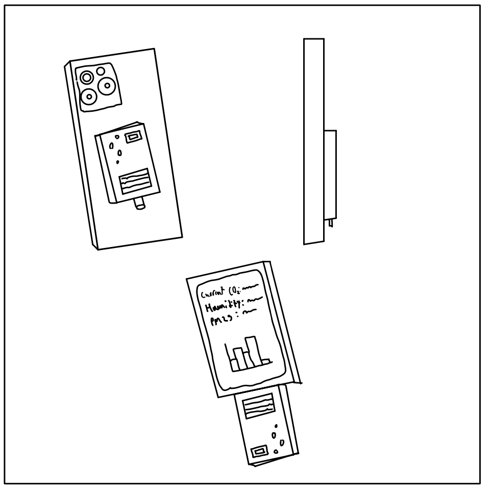
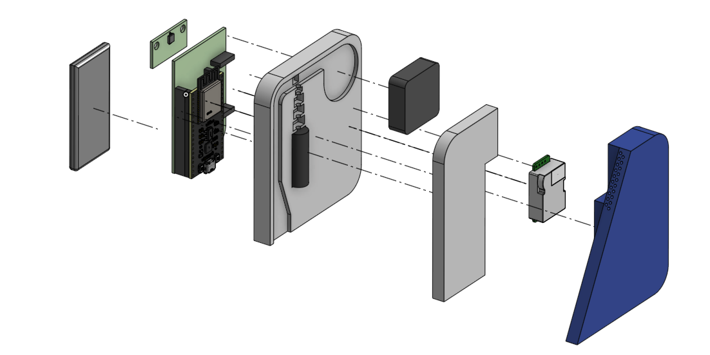
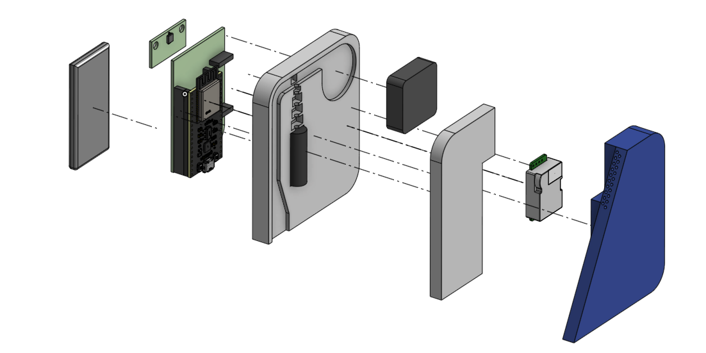
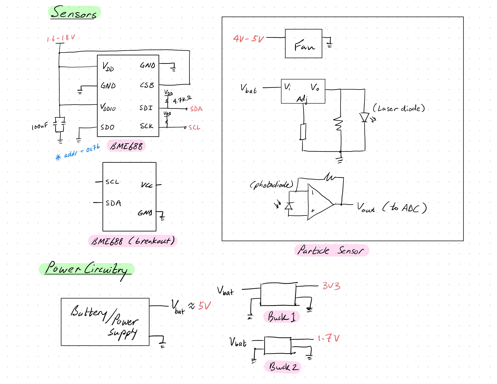
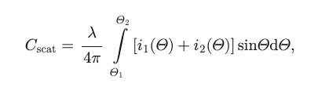
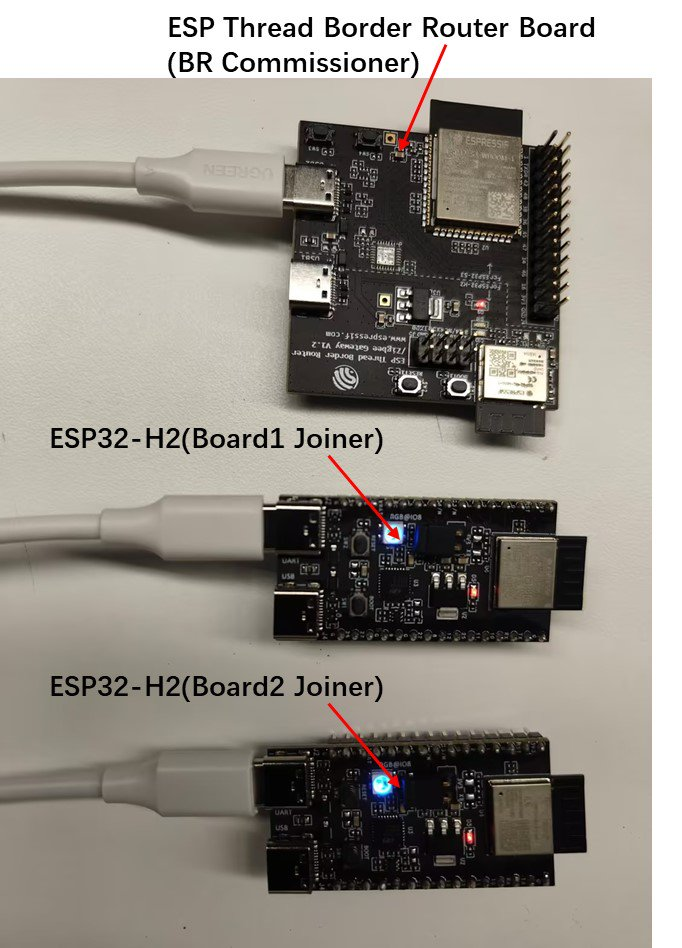

Background
Context & Motivation
The lack of knowledge and awareness of poor indoor air quality presents significant challenges in identifying/mitigating potential health risks. Many environments may contain harmful pollutants, allergens, and volatile organic compounds (VOCs) that go unnoticed, which can lead to long-term exposure and adverse health effects.
According to a 2021 study published by the Institute for Health Metrics and Evaluation (IHME), particulate matter ranks as the first health risk factor among 88 considered.
Death-adjusted life years (DALYs) for a disease are the sum
of years of life lost due to premature mortality (YLLs), and years lived with a disability (YLDs).
 Reference
Reference
This demonstrates that the top health risk is within an individual's control. It is simply a matter of tracking and managing exposure.
Deliverable 1
Project Overview
Problem Statement
Design and prototype a low-cost indoor air quality sensing solution that can accurately provide live data and long-term air quality trends to the public through website & mobile application formats.
Constraints
• Total cost per sensor: $100 max
• Sensor size must not exceed 6x6x2in
• Weight: 1.5lbs (0.7kg)
• Must meet RESET standards:
o PM2.5: +/- 5% ug
o TVOC: +/- 15% ppb
o CO2: +/- 5% ppm
o Temperature: +/- 1 degree
o Humidity: +/- 5% RH
Criteria
• Volume of indoor air measured/time
• Length of battery life (power usage)
• Ease of installation/setup
• Durability & longevity
Deliverable 2
Solutions & Patents
Solutions
1. Fixed sensors mounted within indoor public spaces
2. Personal air quality sensor for individual use
3. Portable air quality sensor for indoor public spaces

4. Mobile robot that maps indoor spaces and collect data across facility

Patents
Implementation of Air Quality Sensor Network
- Networked air quality monitoring system
- Smart-home multi-functional hazard detector providing location-specific feature configuration
- Integrated air quality sensor that detects multiply gas species
Air Quality Sensor Design
Deliverable 3
Solution Selection

Deliverable 4
Detailed Design Overview
Project Management
Mechanical
 



Electrical

Software
Database

App Development

Deliverable 5
Design Verification
PM/Project Updates
- Initial prototyping components have been ordered
- Picked up some supporting equipment from MME lab
- Gained access to air pollution lab on campus under Prof Robert Nishida

Mechanical
Source: OPCSIM, Hagan, 2020
An aerosol distribution can be described as the sum of n lognormal distributions according to the formula

where Ni is the number concentration, Dpi is the median particle diameter (Geometric mean), and sigma_i is the standard deviation.
Parameters of interest:
- (1) Wavelength of the laser
- (2) Viewing angle of scattered light
- (3) Number of discrete bins and their widths
Mie theory calculations are referenced from Light Scattering, Bohren, 1983
where lambda is wavelength of laser, theta is viewing angle, and i is the intensity distribution function
Based on the parameters of interest and this theory, a calibration curve is generated which defines specific bin ranges with estimated Cscat (scattering area per particle)

To summarize, a particle crosses the laser which generates a scattering amplitude which is associated with a specific "bin" via the calibration curve. This then allows us to classify the measurement as a specific particle diameter based on the physics model.
Firmware
In the Thread mesh network topology, the sensor modules function as end devices, repsonsible for collecting air quality data. These end devices transmit their data to router nodes or a border router, which facilitate communication across the mesh network and relay the data to the appropriate destinations.
The image below shows two terminal windows: the left simulating the leader in a Thread network and the right emulating an end device attempting to join. After some setup commands, we successfully connected the two simulated notes.